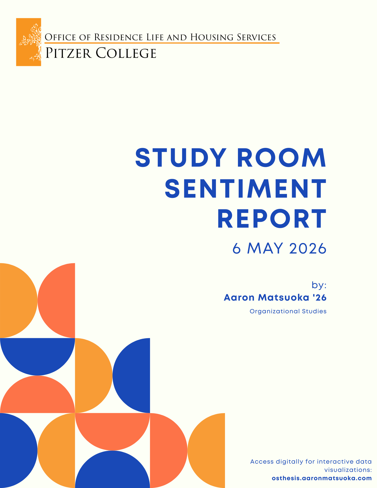
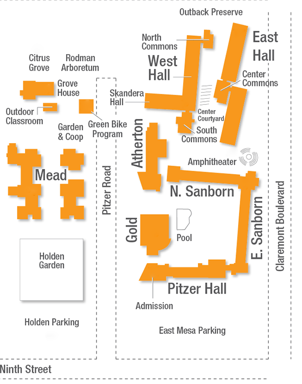

First and foremost, thank you to all my classmates in my Organizational Studies (OS) courses,
specifically shout out to the Organizational Theory class of the Fall of 2023 who inspired me to
take on OS as a major: Ella de Castro, William Galbreath, Carly Kirsch, Victoria Gossum,
Kelly Heimdahl, Erica Matthiesen, Sophia Heffner, Blake Weld, Lucy Faulkner, Gulnaz Amanzholova,
Abby Gonzalez, Ruth Solomon, Luca Rudenstine, Olivia Richardson Bozzo, Chi Adi, Lloyd Lu,
Jessica Lin, Ike Hinton, Perrin Hinds, Nova Queen-Yglesias, Sofia Presser, Wynne Chase,
Malia Loo.
Many thanks, in particular, to Sofia Presser and Lucy Faulkner my closest friends in the OS major and our thesis cohort. May the sound of their Russian and laughter be heard around the world as they leave Pitzer.
So many thanks to Barabara Junisbai for her mentorship, friendship and constant support — teaching me to question our assumptions on what is “natural” within our organizations. My gratitude to Joe Koluder in Residence Life and Housing Services for taking on my project as a staff member and keeping up with the many email chains that I cc’d him on — from my work as a Resident Assistant to my work on this project his support and perspective has been invaluable.
Thank you to the Pitzer Archives for their support and resources, although the final form of the project never became fully realized.
Thank you to all the students who took the time to fill out the survey and share their thoughts on study spaces at Pitzer. Your voices are what made this project possible and I hope that this report can be a step towards improving our campus for future generations of Pitzer students.
Finally, thank you to my family who have supported me through every step of my academic journey. Your love and encouragement have been my foundation and I am forever grateful for your presence in my life.
In my four years at Pitzer I have been exposed to many study spaces across the 5Cs. I have heard complaints about Pitzer study rooms, but I wanted to discover how people really used study rooms and if there was a desire to improve. This data has been collected as part of my senior thesis project in Organizational Studies to discover what Pitzer students actually want in their study spaces in order to make them more productive and successful students. This report will shine light on the needs of students within on-campus study spaces and how.
Organizational studies put simply is the study of how humans form and structure collectives and the systems that they operate within and interact with. Specifically, Organizational Studies is an interdisciplinary field combining Political Studies, Sociology, Psychology and Economics to analyze how organizations operate, how they affect society, and what their lifecycle is like: how they are created, maintained, and modified. An organization could mean anything from a Fortune 500 company with a stratified hierarchy of positions, or it could mean your friend group — in this case the organization I am examining is Pitzer. Within our organizations that we participate in there are many different factors that impact the organizational dynamic — power imbalances, physical environment, interpersonal conflicts, individual identities, and much more.
With the definition of organizational studies in mind, the focus of my thesis project of examining student study spaces, physical spaces are not only important to how people create their emotional and intellectual realities, but directly correlates to where and how people organize. It is well understood within psycology that the built environment — or manmade environment — is constantly impacting our autonomic and central nervous systems. It has the power to influence not only behavioral changes, but even cellular and molecular alterations (Bower et al.). Things as simple as brightness and color of lights can impact someone's mood (Küller et al.). These subtilties show how important thoughtful student spaces are in creating belonging, academic success and a sustained love of Pitzer after graduation.
The following data was collected through a survey designed in collaboration with Professor of Organizational Studies Barbara Junisbai and Associate Dean of Residence Life and Community Standards Joe Koluder.
Going through three revisions, including reacting to feedback from Joe and Barbara, the survey gathered data using a combination of short response, long response, 5-point Likert scale, multiple choice and single choice questions. The survey was hosted using Microsoft Forms and responses were collected on a fully anonymous basis. However, access to the form was limited to Pitzer accounts and required athentication through Microsoft Entra ID using --@pitzer.edu single sign-on credentials.
Although very unlikely, due to the nature of the authentication being only limited to those with an --@pitzer.edu account, it should be noted that Pitzer faculty and staff could have accessed and responded to the survey, fraudulently pretending to be a student.
The survey was primarily marketed to students through fliers, the student talk listserv (student-talk@pitzer.edu), and word of mouth. Additionally, responses were solicited at McConnell dining hall during one meal period.
A summary of the survey and responses can be found here and the raw dataset can be accessed here.
Understanding biases in the data
Fig 1. Survey respondents by class year.
Fig 2. Survey respondents by residence.
Fig 3. Distribution of class year across residence halls.
Importantly, the Class of 2028 had 10% higher participation in the survey making the population a clear majority in the results. This is evidenced by a combined 24% of students lived in the WES community as a result of the Sophomore Year Experience. While this circumstance does not invalidate the results, this must be considered when evaluating the data as 10% more participation from one class population is significant enough to impact the results of the survey.
Aesthetics and ambiance
Q: "I would like study rooms more if there were Pitzer Archives installations that showed cool facts about Pitzer's history"
Fig 4. Student sentiment regarding Pitzer Archives installations in study rooms
Takeaway: 56% of students actively support the Archives exhibit and a combined 85% of students actively support or are neutral and open to the Archives exhibit. Pitzer Archives already has framed photographs presenting a low-cost way to enhance currently blank walls in study rooms. This would also enhance institutional memory and create a culture where Pitzer's roots are celebrated.
Campus Study Room Usage
Q: "Where do you live?", "Where do you use study rooms?"
| Where students live | n | Mead Library | Skandera Hall | West Halls | East Hall | Pitzer Hall | Atherton Hall | East Sanborn | North Sanborn |
|---|
Fig 5. Where students live vs where students study on-campus. y-axis represents where students live, x-axis represents where students study.
Takeaway: Data suggests that students like to study in the residence hall that they live in, if available. For example, 95% of residents in East Hall, where there is a high concentration of study rooms, also stated they used study rooms in East Hall. Conversely, 67% of North Sanborn, where there is a low concentration of study rooms, also said they use Pitzer Hall study rooms. This potential student desire for study rooms in the same residence hall they live in is a potential thread to be followed when conducting new surveys about residential study areas.
Campus Study Room Usage
It should be noted that the majority of respondents (34%) were part of the class of 2028 meaning they live in WES halls, for this reason usage location may be skewed due to class-based residential experiences.
Campus Study Room Usage
Q: "Where do you use study rooms?"

Fig 6. Map of Pitzer college with bubble overlay to represent student usage preferences
Students could select multiple locations; total selections (328) exceed survey respondents (131).
Study Room behaviors
Q: "Evaluate the following scenarios and answer based on the frequency you engage in these behaviors"
Fig 7. Student frequency of study behaviors in different locations
Takeaway: Study room usage should be increased to facilitate better work/life balance within our scholar-residence communities. 34% of students reported that they always or often use their room as their study space and 25% reported that they rarely or never use study rooms. While only 28% reported that they always or often use study rooms. Studies have found that working in a personal bedroom can lead to unhealthy associations between work and sleep (Altena et al.). Combined with extended light exposure from screens this can cause serious sleeping issues and hinder academic success.
Q: "Most often, I use study rooms to..."
Fig 8. Student agreement with common study room improvement statements.
student psychology and academic success
Fig 9. Student one-word descriptions of study room aesthetics.
Fig 10. Student one-word descriptions of how the rooms make them feel.
Takeaway: Responses reveal on how the physical study room environment affects emotional state during usage. 8% of respondents said that study rooms made them feel “sad”, while 6% said that study rooms make them feel "focused". In asking what students did like about the study rooms, some cited the uncomfortableness of the rooms as motivating to complete work faster. This suggests that limiting distractions while making study rooms more welcoming and having a combination of different design schemes — for independent work and collaborative work — is essential when thinking about modifying these spaces for academic success.
student desires and preferences
Q: "I would enjoy the study rooms more if..."
Fig 12. Student support for proposed study room improvements.
Takeaway: A combined 68% of students strongly agree or agree with adding furniture for independent work 71% of students strongly agree or agree with adding more comfortable furniture. This shows that there is a desire for more independent co-working designs. This would not only increase study room usage but increase how many people can use them. Additionally, 76% responded that they want soft/ambient lighting in the study rooms. Although bright lights can stimulate alertness, there is a limit and studies have found that too bright of light starts to decrease mood (Küller et al.). Changing lighting in study rooms could potentially uplift mood leading to more efficient and enjoyable study sessions.
The core investigation of this study was to respond to the question: How do Pitzer students
perceive on-campus study spaces and how can they be improved to increase student success and
belonging? In conducting the survey and analyzing the data there were four main findings:
Usage trends are most likely correlated to amenities, First-year study areas are neglected,
Pitzer’s study space issue is only going to get worse, and there is no standard of what is
expected of a study room.
The correlation of amenities and usage trends are best demonstrated by
figure 6 can be used to see where the highest usage areas are.
This can be due to several factors including how many study rooms are available.
For example, in North Sanborn, there is a living room but no study room due to the space being
converted into an affinity space. Mead Library was the most high-use area with 81 responses saying
they use Mead Library. To give context for these results, the formulation of this question was
undescriptive being plainly posed as “where do you use study rooms?” Importantly, this framing
doesn’t give insight into the question of frequency or specific use (e.g. Mead Library for
independent work versus Atherton Hall for group work) meaning that these results are
not effective for predicting the space’s traffic patterns or the push/pull factors of the spaces
(e.g. access to stapler and printer in Mead Library versus access to whiteboards in
Skandera Hall). While these pitfalls exist in the framing of the question, the data still offers
valuable insights into the usage location preferences and correlates to the concentration of
study rooms.
Firstly, despite a 34% majority of sophomore respondents in the survey pool,
61% of students listed Mead Library as at least one of their preferred study locations and of the
328 total selections responding to the question “Where do you use study rooms?” 25%
were Mead Library. When looking at the results of this question in conversation with
figure 11 it becomes clear why Mead Hall is so desirable.
85% of students reported they would want comfortable furniture like armchairs and couches, with
58% also saying that they strongly agree adding comfortable furniture would increase their use
of on-campus study spaces, additionally, 76% reported desiring soft/ambient light, these are
both features that Mead Library has. Artfully designed, Mead Library takes advantage of
recessed lighting, and built-in lamps making the space sufficiently illuminated without being
overbearingly bright; with a printer, stapler, and comfortable couches and armchairs the
desirability of Mead Library is most likely correlated to its unique amenities compared to
other on-campus study spaces.
Further, 35% of respondents reported desiring independent
workplaces, with 58% of students strongly agreeing or agreeing that they most often use
study rooms for independent work (Figure 11, figure 12).
This is another feature of Mead Library that could potentially make it more desirable in comparison to other on-campus options.
Whereas many study rooms are often just a table or two, Mead Library is a thoughtfully designed independent coworking space.
Although correlation cannot be verified fully, this data gives us a preliminary understanding of study room
location usage trends, and it is reasonable to assume that there must be certain elements that
are playing into the staggering preference to select Mead Library over other spaces. It would be
especially interesting to evaluate the impact of coworking with others on independent tasks, it
is my hypothesis that Mead Library users experience a heightened feeling of accountability
attributed to the presence of other people within their environment. This hypothesis is supported
by respondent 101 of the survey who reported “Sometimes [study rooms are] too isolating and I get
distracted. Sadly, I am more productive and on top of my tasks when I have peers around me
and I feel perceived, a little like the panopticon.” Further, I propose that shared
usage may also increase a feeling of belonging or a feeling of shared community which increases
sustained periods of work and fosters community-centered norms that continue to be practiced
outside of the study space. These are both avenues for I recommend for further inquiry when
thinking about fostering campus culture in conjunction with student success. Finally, I
recommend that Mead Library be used as a model when designing independent coworking spaces for
future study room developments and planning when building new spaces.
In contrast, the study rooms within the first-year residential community were the least selected
study rooms reported in the survey, accounting for just 16% of all preferred study locations
selected. Considering that the current first-year class at the time of writing this report,
the class of 2029, made up the third-largest majority, some 24% of respondents compared to the
second-largest 27% for class of 2026 (seniors), this number should be taken seriously,
especially when considering student retention. Currently within the First-Year community,
study rooms are mostly concentrated in Pitzer and Atherton Halls, Pitzer having 5 study rooms
and a common living room and Atherton having 3 study rooms and a living room, respectively.
It is important to note that study spaces in the First-Year area have over the years been taken
over by offices and affinity spaces, including but not limited to the Residence Life and Housing Services in Sanborn C300 suite,
the Mental Health and Wellness Hub in East Sanborn C226 suite, the First-Year Residence Director
in Pitzer Hall D319, the Black Student Union in Pitzer Hall second floor, Pitzer International
Student Association in North Sanborn second floor, Women of Color Collective in Sanborn C200
suite, and the Chronically Ill and Disabled Student Alliance in Atherton Hall second floor.
In no way am I suggesting that these spaces be eliminated or moved from where they are,
however, this reality contextualizes study room availability and addresses a larger issue
of space on the Pitzer campus overall. Turning 64 years old next February 2027, the college
hasn’t experienced any new on-campus growth of building space in almost 15 years
(not including the joint Pitzer-Scripps Nucleus) since with the opening of West,
East and Skandera Halls (WES) in 2012, with growing staffing needs, faculty office space and
the student body increasing in size as the college gets older, the constraint of space has
become clearly evident with student study spaces to be the first to go.
This neglect of campus study spaces thus far has been permissible most of the year likely due to the availability of other study spaces at the Claremont Colleges notably with the opening of Robert Day Science Center (RDSC) conveniently placed at the bottom of the Pitzer Service Road, but the system bottle necks during high-use periods such as final exams. During these stressful and often crucial times in the semester, Pitzer students are left at a disadvantage due to the structure of non-Pitzer study spaces. Continuing with the example of the RDSC, only CMC students can reserve private study rooms within the space, including classrooms. This means that Pitzer students must work in common areas or potentially coordinate with a CMC friend/classmate to reserve the space. Further the space officially closes at 11 p.m. for all non-CMC community members, meaning the space is inaccessible without a CMC ID. Although somewhat of an aside, it is also worth mentioning that the RDSC also drives money from meal swipes away from Pitzer and to CMC at the DayBreak Café that sits within the building.
This lack of Pitzer-specific study spaces poses serious problems when thinking about securing a private space to study for final exams and other assignments that require a quieter, more distraction-free environment, or a more private collaborative space. There are, of course, options like Honnold-Mudd Library that does have private rooms to reserve, however this also poses an issue when you are competing against other 5C students, not to mention Pitzer is the furthest 5C campus from the library. Pitzer does open certain classrooms during finals week, in addition classrooms being accessible during the weekdays, however this doesn’t address weekend nor late-night studying needs and might not meet students where is best for their study needs. For example, although there may be a study room open late at night, a student majoring in biology may want access to a
whiteboard, but all the study rooms with a whiteboard are in use (usually only available in WES study rooms, with one exception in Atherton Hall). Of course, the student could use paper to draw or practice equations, but it might not be the best learning method for them, nor does it offer a collaborative solution when working in a study group. Pitzer must think about enhancing and standardizing current study room offerings to create a unified expectation of a study room and to meet students where they are with their study needs.
This isn’t to say that every student need must be anticipated and addressed as that would be a never-ending endeavor, however, the student testimonies reveal that study rooms in their current form are insufficient. Notably, one student reported, “The [first-year] dorm study rooms are completely lacking in functionality, privacy and aesthetics. Need to be improved” (respondent 13), reinforcing the prior claim that the first-year study rooms are the most neglected. Beyond academic success, when looking at overall student satisfaction, insufficient study space to feel successful at Pitzer could be the seed for looking to transfer. Our residence hall amenities should be taken seriously as actors in retaining students, designing well thought out room layouts and providing basic tools for academic success is a place to start when thinking about the living-learning experience that is so crucial to a residential college. This is another avenue for further exploration, evaluating what students need the most, maybe that looks like a stapler by every printer, or dry erase markers for each whiteboard.
This issue in layout and design is evidenced by other student testimonies solicited about the dislikes of study rooms. Both respondent 24 and 44 spoke about their frustrations with individual people in study rooms:
Both respondents illustrate the current culture surrounding study rooms, when there is only one table or a design that encourages individual use of the space, there is not a culture of sitting with a peer. Study rooms should be designed in a way where joining a peer doesn’t feel awkward but natural. This most likely would require investment in smaller desks/shared tables like in Mead Library that indicate they are for independent work (maybe a low divider). Respondent 44 shines particular light onto students with need for tools like text-to-speech to complete their work. This also brings in the question of accessibility within study rooms: are tables wheelchair accessible? Are the spaces reasonably optimized and accommodating for students or are they just compliant with disability laws? I recommend considering the needs of students with disabilities needs to be a core consideration in study room planning, not an afterthought.
The aesthetics of the study rooms was also a trend, with many people commenting on the color of the walls, lighting, and furniture. One respondent noted, “[t]here is NOTHING on
the walls and they aren’t unique. Each one doesn’t really stand out when they could,
each room could represent like a core value with their art…” (respondent 88) other words that
dominated responses were “Sad” — the single most common word students used to describe how study rooms make them feel
— "bland" and "sterile" also were common in the aesthetic responses (figure 9, 10).